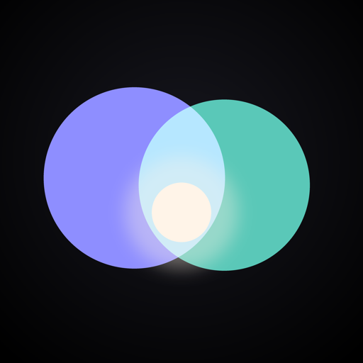

A quiet, private baby tracker for both parents. Readable at a glance — at 3am, holding a baby.
Support
Question, bug, or feedback? Email me directly — every message gets read.
tseale@alumni.nd.eduPrivacy
App Store privacy label
Data Not Collected
Your data lives in your own iCloud. There is no Two of Us server, and we never see it.
Details
Photos. Optional baby and caregiver photos are chosen through the system photo picker — the app never gets access to your photo library. Photos are downscaled on-device and stored with everything else in your iCloud.
Notifications. Generated locally on your device. Nothing about your baby is routed through any service other than Apple's iCloud.
Children's privacy. Two of Us is used by parents and caregivers to record the care they provide. It is not directed at children, has no child-facing features, and collects no data from children — or from anyone else.
Changes. If a future version ever transmits data anywhere other than your iCloud, this policy will be updated first — and the App Store privacy label with it.
About
Two of Us is a native iOS app for parents who want a fast, calm way to track newborn care together. No accounts, no subscriptions, no server of our own — just your iPhone and your iCloud. Built with SwiftUI and CloudKit.